공조냉동기계기사(구) (2005-05-29 기출문제)
1과목: 기계열역학
1. 계가 온도 300 K인 주위로부터 단열되어 있고 주위에 대하여 1200 kJ의 일을 할 때 옳지 않은 것은?
- 계의 내부에너지는 1200 kJ 감소한다.
- 계의 엔트로피는 감소하지 않는다.
- 주위의 엔트로피는 4 kJ/K 증가한다.
- 계와 주위를 합한 총엔트로피는 감소하지 않는다.
(정답률: 23%)

2. 냉동기에서 압축기 입구, 응축기 입구, 증발기 입구의 엔탈피가 각각 387.2 kJ/kg, 435.1 kJ/kg, 241.8 kJ/kg 일 경우 성능계수는?
- 3.0
- 4.0
- 5.0
- 6.0
(정답률: 71%)
3. 어느 이상기체 1 ㎏을 일정 체적 하에 20℃로부터 100℃로 가열하는데 836 kJ의 열량이 소요되었다. 이 가스의 분자량이 2라고 한다면 정압비열은 얼마인가?
- 약 2.09 kJ/㎏℃
- 약 6.27 kJ/㎏℃
- 약 10.5 kJ/㎏℃
- 약 14.6 kJ/㎏℃
(정답률: 50%)
4. 공기 10 kg이 정적 과정으로 20℃에서 250℃까지 온도가 변하였다. 이 경우 엔트로피의 변화는 얼마인가? (단, 공기의 Cv = 0.717 kJ/kgK 이다.)
- 약 2.39 kJ/K
- 약 3.07 kJ/K
- 약 4.15 kJ/K
- 약 5.81 kJ/K
(정답률: 69%)
5. 표준 대기압은 대략 몇 kPa 인가?
- 1.01 kPa
- 10.1 kPa
- 101 kPa
- 1013 kPa
(정답률: 66%)
6. 비열에 관한 설명으로 옳지 않는 것은?
- 공기의 비열비는 온도가 높을수록 증가한다.
- 단원자 기체의 비열비는 1.67로 일정하다.
- 공기의 정압비열은 온도에 따라서 다르다.
- 액체의 비열비는 1에 가깝다.
(정답률: 14%)
7. 직경 20 cm, 길이 5 m인 원통 외부에 5 cm 두께의 석면이 씌워져 있다. 석면 내면, 외면 온도가 각각 100℃, 20℃ 이면 손실되는 열량은 몇 kcal/h인가? (단, 석면의 열전도율은 0.1 kcal/mh℃ 로 가정한다.)
- 620
- 720
- 820
- 920
(정답률: 38%)
8. 다음 그림과 같이 선형 스프링으로 지지되는 피스톤-실린 더 장치 내부에 있는 기체를 가열하여 기체의 체적이 V1에서 V2로 증가하였고, 압력은 P1에서 P2로 변화하였다. 이때 기체가 피스톤에 행한 일은 어느 식으로 계산해야 하는 가?
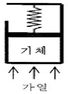
- P2V2-P1V1
- (P2V2-P1V1)/0.4
- (P2+P1)(V2-V1)/2
- P1V1 ln(V2/V1)
(정답률: 50%)
9. 실린더내의 유체가 68 kJ/㎏의 일을 받고 주위에 36 kJ/㎏의 열을 방출하였다. 내부에너지의 변화는?
- 32 kJ/㎏ 증가
- 32 kJ/㎏ 감소
- 104 kJ/㎏ 증가
- 104 kJ/㎏ 감소
(정답률: 61%)
10. 이상기체의 등온 과정에서 압력이 증가하면 엔탈피는?
- 증가 또는 감소
- 증가
- 불변
- 감소
(정답률: 30%)
11. 6 냉동톤 냉동기의 성적계수가 3 이다. 이때 필요한 동력은 몇 kW인가? (단, 1 냉동톤은 3.85 kW이다.)
- 4.4
- 5.7
- 6.7
- 7.7
(정답률: 53%)
12. 공기가 20 m/s의 속도로 풍차 속으로 유입되고, 6 m/s의 속도로 유출된다. 공기 1 kg 당 풍차가 한 일은?
- 182 J/kg
- 224 J/kg
- 241 J/kg
- 340 J/kg
(정답률: 61%)
13. 공기 표준 Brayton 사이클로 작동하는 이상적인 가스 터빈이 있다. 이 터빈의 압축기로 0.1 MPa, 300 K의 공기가 들어가서 0.5 MPa로 압축된다. 이 과정에서 175 kJ/kg의 일이 소요된다. 열교환기를 통해 627 kJ/kg의 열이 들어가 공기를 1100 K로 가열한다. 이 공기가 터빈을 통과하면서 406 kJ/kg의 일을 얻는다. 이 시스템의 열효율은?
- 0.28
- 0.37
- 0.50
- 0.65
(정답률: 32%)
14. 정상상태 정상유동 과정의 팽창밸브가 있다. 입구에 액체가 유입되며, 이 과정을 스로틀로 간주할 수 있다. 입구 상태를 1, 출구 상태를 2로 각각 나타낼 때, 다음 중 어느 관계식이 가장 정확한가?
- u1 = u2 (내부에너지)
- h1 = h2 (엔탈피)
- s1 = s2 (엔트로피)
- v1 = v2 (비체적)
(정답률: 67%)
15. 카르노사이클에 관한 일반적인 설명으로서 가장 옳지 않는 것은?
- 2 개의 가역단열과정과 2 개의 가역등온과정으로 구성된다.
- 사이클에서 총 엔트로피의 변화는 없다.
- 열전달은 등온과정에서만 발생한다.
- 일의 전달은 단열과정에서만 발생한다.
(정답률: 24%)
16. 그림에서 t1 = 38℃, t2 = 150℃, t3 = 260℃이다. 이 사이클의 열효율은? (단, Cv = 0.172 ㎉/㎏㎉, Cp = 0.241 ㎉/㎏㎉ 이다.)
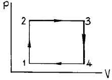
- 4.0 %
- 4.2 %
- 4.4 %
- 4.8 %
(정답률: 25%)
17. -3℃에서 열을 흡수하여 27℃에 방열하는 냉동기의 최대성능계수는?
- 9.0
- 10.0
- 11.25
- 15.25
(정답률: 58%)
18. 증기 터빈 발전소가 이론적으로 최대 45%의 효율을 얻고자 할때, 25℃의 강물을 응축기에서 사용할 때, 보일러의 온도는 몇 도 이상이어야 하는가?
- 227.6℃
- 250.6℃
- 258.4℃
- 268.7℃
(정답률: 49%)
19. 여름철 외기의 온도가 30℃일때 김치 냉장고의 내부를 5℃ 로 유지하기 위해 3kW의 열을 제거해야 한다. 필요한 최소 동력은 얼마인가?
- 0.27 kW
- 0.37 kW
- 0.54 kW
- 2.7 kW
(정답률: 50%)
20. 보일러 입구의 압력이 9800 kN/m2이고, 복수기의 압력이 4900 N/m2일때 펌프일은? (단, 물의 비체적은 0.001 m3/㎏ 이다.)
- -9.795 kJ/㎏
- -15.173 kJ/㎏
- -87.25 kJ/㎏
- -180.52 kJ/㎏
(정답률: 70%)
2과목: 냉동공학
21. 냉동장치의 운전에 관한 다음 설명 중 맞는 것은?
- 압축기에 액백(liquid back)현상이 일어나면 토출가스 온도가 내려가고 구동 전동기의 전류계 지시값이 변동한다.
- 수액기내에 냉매액을 충만시키면 증발기에서 열부하 감소에 대응하기 쉽다.
- 냉매 충전량이 부족하면 증발압력이 높게 되어 냉동능력이 저하한다.
- 냉동부하에 비해 과대한 용량의 압축기를 사용하면 저압이 높게 되고, 장치의 성적계수는 상승한다.
(정답률: 63%)
22. 냉동능력 1RT인 냉동장치가 1kW의 압축동력을 필요로 하고 있다. 응축기에서의 방열량은?
- 41.8㎉/h
- 486㎉/h
- 4180㎉/h
- 4860㎉/h
(정답률: 67%)
23. 다음 냉매액 강제 순환식 증발기에 대한 설명 중 옳은 것은 어느 것인가?
- 냉매액 펌프 출구의 냉매량은 증발기에서 증발하는 냉매량과 같다.
- 냉매액을 강제순환 시키므로 냉각작용은 냉매의 현열을 이용한 것이다.
- 강제 순환식이므로 증발기에 오일이 고일 염려가 없고 배관 저항에 의한 압력강하도 보강된다.
- 증발기에는 항상 냉매액이 충만하여 있으므로 액압축이 일어나기 쉽다.
(정답률: 65%)
24. 몰리에르 선도상에서 알 수 없는 것은?
- 냉동능력
- 성적계수
- 압축비
- 압축효율
(정답률: 75%)
25. 압축기의 압축비 및 체적효율에 관한 설명중 틀린 것은?
- 압축비는 고압측의 게이지압력을 저압측의 게이지압력으로 나눈값이다.
- 압축비가 적을 수록 체적효율은 커진다.
- 간극이 적을 수록 체적효율은 커진다.
- 흡입온도가 같을 경우 압축비가 커질 수록 토출가스의 온도는 높아진다.
(정답률: 72%)
26. 다음 중 소형의 프레온 냉동기용 토출밸브로 많이 이용되는 것은?
- 다이어프램 밸브
- 페더 밸브
- 플레이트 밸브
- 리이드 밸브
(정답률: 34%)
27. 공냉식 응축기에서 열통과량을 증대시키기 위한 방법으로 적당하지 못한 것은?
- 전열면에 휜(fin)을 부착한다.
- 관두께를 얇게 한다.
- 응축압력을 낮춘다.
- 냉매와 공기와의 온도차를 증가시킨다.
(정답률: 67%)
28. 압축식 냉동기와 흡수식 냉동기에 대한 설명 중 잘못된 것은 어느 것인가?
- 증기를 값싸게 얻을 수 있는 장소에서는 흡수식이 경제적으로 유리하다.
- 흡수식에 비해 압축식이 COP가 높다.
- 냉매를 압축하기 위해서는 압축식에서는 기계적 에너지를 흡수식에서는 화학적 에너지를 이용한다.
- 동일한 냉동능력을 갖기 위해서는 흡수식은 압축식에 비해 장치가 커진다.
(정답률: 48%)
29. R-12의 폴리트로우프 변화에서 T1=-15℃, P1 = 1.86㎏/㎝2 abs이고, P2=7.58㎏/㎝2abs 일 때 T2는 얼마인가 ? (단, k = Cp/Cv = 1.136 이다.)
- 98℃
- 33℃
- 15℃
- 4℃
(정답률: 60%)
30. 냉동실의 온도를 -10℃로 유지하기 위하여 매시 100000㎉의 열량을 제거해야한다. 이 배제열량을 냉동기로 제거한다면 이 냉동기의 소요마력은 약 얼마인가 ? (단, 이 냉동기의 방열온도는 15℃이다.)
- 17.5 HP
- 16.2 HP
- 15.1 HP
- 13.1 HP
(정답률: 40%)
31. 액분리기는 어디에 설치하는가?
- 수액기 출구
- 압축기 출구
- 팽창밸브 입구
- 증발기 출구
(정답률: 70%)
32. 수냉 횡형 쉘 앤 로우핀 튜브(SHELL AND LOW FIN TUBE) 응축기가 다음과 같을 때 냉각관의 열통과율 U(㎉/m2ｈ℃)은 얼마인가?
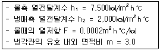
- 1200 ㎉/m2ｈ℃
- 666.7 ㎉/m2ｈ℃
- 2000 ㎉/m2ｈ℃
- 1343 ㎉/m2ｈ℃
(정답률: 43%)
33. 다음은 증기 압축식 냉동장치를 운전할 때 나타나는 현상이다. 옳지 않은 것은?
- 냉매 액관중에 프래쉬 가스(flash gas)가 현저히 발생하면 저압측 압력이 높아진다.
- 냉동장치내에 냉매가 부족하면 증발압력이 저하된다.
- 응축액의 과냉각도가 클수록 액관중에서 프래쉬 가스의 발생이 어렵다.
- 증발기 출구가스의 과열도가 커지면, 압축기 토출가스의 온도는 높아진다.
(정답률: 75%)
34. 공랭식응축기에 대한 설명 중 옳지 않는 것은?
- 냉각수를 사용하지 않으므로 냉각수 배관 및 펌프, 배수설비 등이 필요 없다.
- 암모니아 냉동기에 주로 사용한다.
- 겨울철 응축온도가 낮아지기 쉽다.
- 냉매배관의 시공이 필요하다.
(정답률: 48%)
35. 다음 중 증발압력이 높아지는 원인과 관계가 깊은 것은?
- 냉매순환량의 감소
- 증발기내의 유막형성
- 냉동부하의 증가
- 응축기 냉각수온의 저하
(정답률: 50%)
36. 40RT의 브라인 쿠울러에서 입구온도 -15℃일 때 브라인의 유량이 0.5m3/min이라면 출구의 온도는 몇℃인가 ? (단, 브라인의 비중은 1.27, 비열은 0.66kcal/kg℃이다.)
- -20.28
- -16.75
- -11.21
- -9.72
(정답률: 55%)
37. 피스톤 압출량이 48m3/h인 압축기를 사용하는 아래와 같은 냉동장치가 있다. 이 같은 운전상태의 압축기의 체적효율 ηv = 0.75, 배관에서의 열손실을 무시하는 경우 이 냉동 장치의 냉동능력은 약 몇 냉동톤인가?
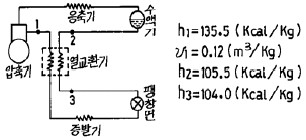
- 1.83(냉동톤)
- 2.54(냉동톤)
- 2.71(냉동톤)
- 2.84(냉동톤)
(정답률: 50%)
38. 일반적으로 냉방 시스템에 물을 냉매로 사용하는 냉동방식은?
- 터보식
- 흡수식
- 진공식
- 증기압축식
(정답률: 77%)
39. 냉동장치에서 플래시가스 발생원인 중 옳지 않은 것은?
- 액관이 직사광선에 노출되었다.
- 응축기의 응축수량이 갑자기 많아졌다.
- 액관이 현저하게 입상하거나 지나치게 길다.
- 관의 지름이 작거나 관내에 스케일에 의하여 관경이 작아졌다.
(정답률: 65%)
40. 다음은 스크류(screw) 냉동기의 특징을 설명한 것이다. 틀린 것은?
- 동일용량의 왕복동식 냉동기에 비해 부품의 수가 적고 수명이 길다.
- 10∼100% 사이의 무단계 용량제어가 되므로 자동운전에 적합하다.
- 타 냉동기에 비해 오일 햄머의 발생이 적다.
- 소형 경량이긴 하나 진동이 많으므로 강고(强固)한 기초가 필요하다.
(정답률: 72%)
3과목: 공기조화
41. 열교환기의 입구측 공기 및 물의 온도가 각각 30℃, 10℃ 출구측 공기 및 물의 온도가 각각 15℃, 13℃일 때, 대향류의 대수평균 온도차(LMTD)는 얼마인가?
- 6.8 ℃
- 7.8 ℃
- 8.8 ℃
- 9.8 ℃
(정답률: 36%)
42. 방열기의 EDR이란?
- 상당방열면적
- 표준방열면적
- 최소방열면적
- 최대방열면적
(정답률: 67%)
43. 덕트의 분기점에서 풍량을 조절하기 위하여 설치하는 댐퍼는?
- 방화댐퍼
- 스피릿 댐퍼
- 볼륨댐퍼
- 터어닝 베인
(정답률: 69%)
44. 다음 공조방식중 개별식(個別式)에 속하는 것은 어느 것인가?
- 팬 코일 유니트 방식
- 단일 덕트 방식
- 2중 덕트 방식
- 팩케지 유니트 방식
(정답률: 72%)
45. 다음 중 서로 올바르게 연결된 것은?
- 열통과율 ---> ㎉ / m2h℃
- 열전달률 ---> ㎉ / mh℃
- 열전도율 ---> ㎉ / m2h℃
- 열통과저항 ---> mh℃ / ㎉
(정답률: 73%)
46. 실내공기가 26℃이고 절대습도는 0.01⑤kg/kg'이라고 한다. 이 방의 현열량이 5,000kcal/h, 잠열량이 500kcal/h라고 하고 취출온도차가 10℃라고 하면, 급기의 온도와 절대습도는 얼마인가?
- 21℃, 0.007kg/kg'
- 21℃, 0.008kg/kg'
- 16℃, 0.009kg/kg'
- 16℃, 0.010kg/kg'
(정답률: 40%)
47. 다음 중 분진 포집율의 측정법이 아닌 것은?
- 비색법
- 계수법
- 살균법
- 중량법
(정답률: 64%)
48. 다음은 단일덕트 방식에 대한 설명이다. 관계 없는 것은?
- 중앙기계실에 설치한 공기조화기에서 조화한 공기를 주 덕트를 통해 각 실로 분배한다.
- 단일덕트 일정풍량 방식은 개별제어에 적합하다.
- 단일덕트 방식에서는 큰 덕트 스페이스를 필요로 한다
- 단일덕트 일정 풍량 방식에서는 재열을 필요로 할 때도 있다.
(정답률: 75%)
49. 직접 난방방식이 아닌 것은?(오류 신고가 접수된 문제입니다. 반드시 정답과 해설을 확인하시기 바랍니다.)
- 온수난방
- 복사난방
- 단일덕트난방
- 온풍난방
(정답률: 25%)
50. 온도 t1, 절대습도 x1의 공기 m %와 온도 t2, 절대습도 x2의 공기를 혼합했을 때 이루어지는 혼합공기의 온도 t와 습도 x를 옳게 표시한 것은?
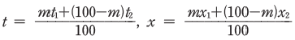
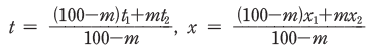
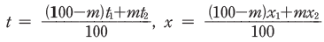
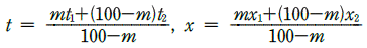
(정답률: 69%)
51. 고속 덕트의 설계법에 관한 설명 중 맞지 않는 것은?
- 송풍기 동력이 과대해진다.
- 동력비가 증가된다.
- 배연 덕트는 소음의 고려가 필요하지 않다.
- 리턴 덕트와 공조기에서는 저속방식과 다른 풍속으로 한다.
(정답률: 48%)
52. 증기압력 1 kg/cm2에 대하여 5∼8m 정도 압상이 가능하고 수격작용이 심하거나 과열증기에도 적용할 수 있다. 단점으로는 구조상 공기를 배제할 수 없으며, 동파의 우려가 있는 증기트랩은 어느 것인가?
- 벨로즈트랩(bellows trap)
- 플로트트랩(float trap)
- 버킷트랩(bucket trap)
- 디스크트랩(disk trap)
(정답률: 37%)
53. 다음의 공기조화 부하 중 잠열변화가 포함되는 것은?
- 외벽을 통한 손실열량
- 침입외기에 의한 취득열량
- 유리창을 통한 관류 취득량
- 지하층 바닥을 통한 손실열량
(정답률: 77%)
54. 공조 방식 중 개별 방식의 장점이 아닌 것은?
- 국소적인 운전이 용이하다.
- 개별 제어가 자유롭다.
- 취급이 간단하다.
- 외기냉방이 용이하다.
(정답률: 83%)
55. 공기조화 방식의 특징 중 전공기식 정풍량 단일 덕트방식에 해당하는 것은?
- 실내부하에 따라 개별실 제어가 가능하다.
- 가변풍량방식에 비하여 송풍기 동력이 커져서 에너지 소비가 증대한다.
- 급기류가 변화하므로 불쾌감을 줄 우려가 있다.
- 최소풍량시 외기도입이 어렵다.
(정답률: 69%)
56. 에어와셔 단열 가습시 포화효율은 어떻게 표시하는가 ? (단, 입구공기의 건구온도 t1, 출구공기의 건구온도 t2, 입구공기의 습구온도 t1', 출구공기의 습구온도t2'이다.)
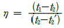
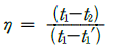
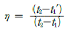
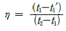
(정답률: 56%)
57. 어떤 방의 취득 현열량이 2000㎉/h로 되었다. 실내온도를 28℃로 유지하기 위하여 16℃의 공기를 취출하기로 계획한다면 실내로의 송풍량은 약 몇[m3/h]인가 ? (단, 공기의 비중량은 1.2㎏/m3, 정압비열은 0.24㎉/㎏℃이다.)
- 426.2[m3/h]
- 467.5[m3/h]
- 578.7[m3/h]
- 612.3[m3/h]
(정답률: 67%)
58. 다음 설명 중 옳지 않은 것은?
- 주철제 보일러는 섹션의 증감으로 용량 조절이 용이하다.
- 노통연관 보일러는 증기발생량이 크고, 고압증기를 얻을 수 있다.
- 주철제 보일러의 효율은 일반적으로 노통연관식 보일러에 비해 높다.
- 노통연관식 보일러는 효율이 높으며, 높이가 낮아서 높은 천장을 요구하지 않는다.
(정답률: 53%)
59. 유효온도(effective temperature)에 대한 설명중 옳은 것은?(오류 신고가 접수된 문제입니다. 반드시 정답과 해설을 확인하시기 바랍니다.)
- 온도, 습도, 기류를 하나로 조합한 상태의 측정온도이다.
- 각기 다른 실내온도에서 습도 및 기류에 따라 실내 환경을 평가하는 척도로 사용된다.
- 실내 환경요소가 인체에 미치는 영향을 같은 감각으로 얻을 수 있는 기류가 정지된 포화상태의 공기온도로 표시한다.
- 유효온도선도는 복사영향을 고려하여 건구온도 대신에 글로브 온도계의 온도를 사용한다.
(정답률: 65%)
60. 감습장치에 대한 설명 중 틀린 것은?
- 냉각 감습장치는 냉각코일 또는 공기세정기를 사용하는 방법이다.
- 압축성 감습장치는 공기를 압축해서 여분의 수분을 응축시키는 방법이며, 소요동력이 적기 때문에 일반적으로 널리 사용된다.
- 흡수식 감습장치는 염화리튬, 트리에틸렌글리콜 등의 액체 흡수제를 사용하는 것이다.
- 흡착식 감습장치는 실리카겔 활성 알루미나 등의 고체 흡착제를 사용한다.
(정답률: 77%)
4과목: 전기제어공학
61. 절연저항을 측정하는데 사용되는 계기는?
- 메거(Megger)
- 회로시험기
- R-L-C 미터
- 검류계
(정답률: 70%)
62. 3상 유도전동기의 출력이 5HP, 전압 200V, 효율 90%, 역률 80% 일 때 이 전동기에 유입되는 선전류는 약 몇 A 인가?
- 13
- 15
- 17
- 19
(정답률: 29%)
63.
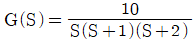
에서 ω→∞로 접근시키면 |G(jω)| 의 값은?- 0
- 1
- 10
- ∞
(정답률: 35%)
64. 농형 유도전동기의 기동방법 중 보통 10 ~ 15kW 정도 용량의 전동기에 사용하는 방법으로 기동전류가 전전압 기동전류의 1/3으로 감소될 수 있는 기동법은?
- 직입 기동
- Y-△기동
- 기동보상기 기동
- 리액터 기동
(정답률: 60%)
65. 프로세스제어에 속하는 제어량은?
- 온도
- 전류
- 전압
- 장력
(정답률: 56%)
66. 물체의 위치, 방위, 자세 등의 기계적 변위를 제어량으로 하는 피드백 제어계는?
- 자동조정(automatic regulation)
- 프로세스제어(process control)
- 서보기구(servo mechanism)
- 프로그램제어(program control)
(정답률: 62%)
67. 변압기에 대한 설명으로 틀린 것은?
- 변압기의 2차측 권선수가 1차측 권선수보다 적은 경우에는 1차측의 전압보다 2차측의 전압이 낮다.
- 변압기의 1차측 전압이 2차측 전압보다 높을 경우, 2차측에 부하가 연결되면, 흐르는 전류는 1차측에서 공급되는 전류값보다 크다.
- 변압기는 교류에만 사용되는 기기이다.
- 변압기의 1차측과 2차측의 권선수가 다를 경우에는 1차측에 인가한 전압의 주파수와 2차측에 나타나는 전압의 주파수는 다르다.
(정답률: 40%)
68.
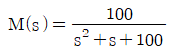
으로 표시되는 2차계에서 고유진동수 ωn은?- 5
- 10
- 15
- 20
(정답률: 37%)
69. 직류기의 전기자반작용이 아닌 것은?
- 중성축이 이동한다.
- 전동기는 속도가 저하된다.
- 국부적 섬락이 발생한다.
- 발전기는 기전력이 감소한다.
(정답률: 45%)
70. 그림과 같은 펄스를 라플라스 변환하면 그 값은?
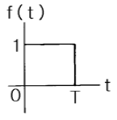
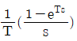
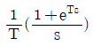
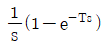
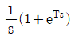
(정답률: 53%)
71. 100V의 전압으로 30C의 전기량을 20초 동안에 운반했을 때 전력은 몇 W 인가?
- 50
- 100
- 150
- 200
(정답률: 48%)
72. PI 동작의 전달함수는? (단, Kp 는 비례감도이다.)
- Kp
- KpST
- Kp(1 + ST)
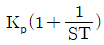
(정답률: 57%)
73. 그림과 같은 계전기 접점회로의 논리식은?
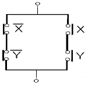
- X Y
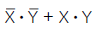
- X + Y
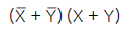
(정답률: 58%)
74. R-L-C 병렬회로에서 회로가 병렬공진되었을 때 합성 전류는 어떻게 되는가?
- 최소가 된다.
- 최대가 된다.
- 전류는 흐르지 않는다.
- 전류는 무한대가 된다.
(정답률: 57%)
75. 200V, 2kW 전열기의 전열선을 반으로 자를 경우 소비전력은 몇 kW 인가?
- 1
- 2
- 3
- 4
(정답률: 34%)
76. 영구자석의 재료로 요구되는 사항은?
- 잔류자기 및 보자력이 적은 것
- 잔류자기가 크고 보자력이 적은 것
- 잔류자기는 작고 보자력이 큰 것
- 잔류자기 및 보자력이 큰 것
(정답률: 40%)
77. 불연속제어에 해당되는 것은?
- 비례제어
- 샘플값제어
- 미분제어
- 적분제어
(정답률: 62%)
78. 논리식
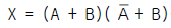
를 간단히 하면?- A
- B
- AB
- A + B
(정답률: 53%)
79. 3상 유도전동기에 대하여 일정 토크제어를 위하여 인버터를 사용하여 속도제어를 하고자 할 때 공급전압과 주파수의 관계는 어떻게 해야 하는가?
- 공급전압과 주파수는 비례되어야 한다.
- 공급전압과 주파수는 반비례되어야 한다.
- 공급전압이 항상 일정하여야 한다.
- 공급전압의 제곱에 비례하여야 한다.
(정답률: 53%)
80. 공기식 조작기기의 장점을 나타낸 것은?
- 신호를 먼 곳까지 보낼 수 있다.
- 선형의 특성에 가깝다.
- 간단하게 PID동작이 된다.
- 다른 식과 조합이 쉽고 동작이 잘 된다.
(정답률: 67%)
5과목: 배관일반
81. 다음은 배관내의 마찰손실에 관한 기술이다. 이중 적당한 것은?
- 유속이 2배로되면 마찰손실 수두도 2배로 된다.
- 유속이 2배로되면 마찰손실 수두는 4배로 된다.
- 관경이 2배로되면 마찰손실 수두도 2배로 된다.
- 관경이 2배로되면 마찰손실 수두는 4배로 된다.
(정답률: 64%)
82. 매설 가스 배관법 중 맞지 않는 것은?
- 물이 고일 염려가 있는 곳은 수취기를 설치한다.
- 배관은 적당한 앞올림 구배를 두어 접합한다.
- 다른 지하 매설물과는 적당한 거리를 두어야 한다.
- 매설관은 중압인 경우 PE관을 사용한다.
(정답률: 53%)
83. 급탕배관에 있어서 관의 부식에 대한 내용중 틀린 것은?
- 급탕관은 급수관 보다 부식되기 쉽다.
- 아연도금 강관은 동관보다 부식이 빠르다.
- 연관은 열에 강하고 탕(湯)에 잘 부식되지 않아서 적당하다.
- 급탕관은 노출배관하는 것이 좋다.
(정답률: 56%)
84. 다음 첵크밸브를 나타내는 것은?
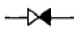
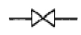
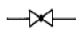
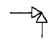
(정답률: 40%)
85. 고온수 난방방식에서 2차측 접속방식이 아닌 것은?
- 직결방식
- 브리드인방식
- 열교환방식
- 오리피스접합방식
(정답률: 40%)
86. 폴리에틸렌 배관의 접합방법의 종류가 아닌 것은?
- 기볼트 접합
- 용착 슬리브 접합
- 인서트 접합
- 용접
(정답률: 40%)
87. 그림에서 보일러 수직 상향관①의 온수온도를 90℃, 복귀 수직하향관②의 온수온도를 70℃라 할 때 순환 수두압은 얼마인가?
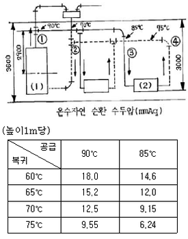
- 10.53mmAq
- 13.53mmAq
- 15.35mmAq
- 17.53mmAq
(정답률: 6%)
88. 고가 탱크식 급수방법을 설명하였다. 틀린 것은?
- 고층건물이나 상수도 압력이 부족할 때 사용된다.
- 저수량을 언제나 확보할 수 있으므로 단수가 되지 않는 다.
- 건물내의 밸브나 각 기구에 일정한 압력으로 물을 공급한다.
- 고가탱크에 펌프로 물을 압송하여 탱크내에 공기를 압축 가압하여 일정한 압력을 유지시킨다.
(정답률: 53%)
89. 열을 잘 반사하고 확산하므로 방열기 표면 등의 도장용으로 좋은 도료는 어느 것인가?
- 광명단
- 산화철
- 합성수지
- 알루미늄
(정답률: 72%)
90. 다음 도시기호 중 플랜지식 관결합 방식 기호는?
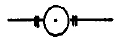
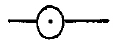
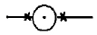
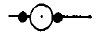
(정답률: 55%)
91. 진공환수식 증기난방 장치에서 흡상이음의 1단 높이로서 적당한 것은?
- 1.5m 이내
- 2.5m 이내
- 3.5m 이내
- 4.5m 이내
(정답률: 48%)
92. 온수난방장치에서 탱크내의 물이 10000ℓ이고 물의 온도가 각각 10℃, 85℃인 경우, 온수의 팽창량은 약 얼마인가?(단, 물의 비중은 10℃일 때 0.9997, 85℃일 때 0.9686 이다.)
- 229ℓ
- 321ℓ
- 354ℓ
- 423ℓ
(정답률: 40%)
93. 프레온 냉매배관 설계시 옳지 않는 것은?
- 지나친 압력강하를 방지한다.
- 2개 입상관(Riser)사용시 트랩(trap)을 크게 한다.
- 정지시 압축기로의 액냉매의 유입을 방지한다.
- 압축기를 떠난 윤활유가 다시 압축기로 일정비율로 되돌아 와야 한다.
(정답률: 62%)
94. 상향식 급탕배관에서 구배를 적합하게 설명한 내용은?
- 급탕 수평 주관은 상향, 복귀관은 하향구배이다.
- 급탕 수평 주관은 하향, 복귀관은 하향구배이다.
- 급탕 수평 주관, 복귀관 모두 상향구배이다.
- 급탕 수평 주관, 복귀관 모두 하향구배이다.
(정답률: 48%)
95. 다음 중 LPG 탱크 및 냉동기 배관 등 빙점 이하의 온도에서만 사용되며 두께를 스케줄 번호로 나타내는 강관의 KS 표시 기호는?
- SPP
- SPLT
- SPH
- SPHT
(정답률: 52%)
96. 증기가열 코일이 있는 저탕조의 하부(저온부)에 부착하는 배관이 아닌 것은?
- 팽창관
- 급수관
- 배수관
- 반탕관
(정답률: 48%)
97. 다음에서 바이패스관 설치시 필요치 않은 부속은?
- 엘보우(Elbow)
- 글로우브 밸브(Globe valve)
- 유니온(Union)
- 안전변(safety valve)
(정답률: 50%)
98. 다음은 플랜지 이음에 대한 설명이다. 옳지 않은 것은?
- 배관의 점검이나 보수를 위하여 관을 해체할 필요가 있는 곳에 적용한다.
- 강관인 경우 플랜지이음은 특별한 규약이 없으면 최소 호칭지름 100A이상에 적용한다.
- 플랜지를 설치하는 위치는 볼트를 체결하기 용이한 곳으로 한다.
- 여러개가 통과하는 배관에는 플랜지가 서로 어긋나도록 위치시킨다.
(정답률: 36%)
99. 관의 탄성을 이용하여 신축을 흡수하며 옥외 고압배관에 가장 적합한 신축관이음쇠는?
- 루프 (loop)형
- 슬리브 (sleeve)형
- 벨로우즈(bellows)형
- 스위블조인트(swivel joint)형
(정답률: 50%)
100. 보일러용 물로써 경수를 사용해서는 안되는데 그 원인으로서 가장 적합한 것은?
- 배관내에 워터 햄머를 발생시키는 원인이 되기 때문
- 보일러의 효율을 저하시킬수 있는 원인이 되기 때문
- 연수(軟水)나 적수(適水)에 비해 열전달이 크기 때문
- 급탕과 공용으로 이용할 수 없기 때문
(정답률: 67%)
"계의 엔트로피는 감소하지 않는다."는 열역학 제2법칙에 따른 설명이다. 단열 과정에서는 엔트로피가 변하지 않는다.
"주위의 엔트로피는 4 kJ/K 증가한다."는 열역학 제2법칙에 따른 설명이다. 일을 한 시스템은 주위에 열을 방출하며, 이로 인해 주위의 엔트로피가 증가한다.
"계와 주위를 합한 총엔트로피는 감소하지 않는다."는 열역학 제2법칙에 따른 설명이다. 단열 과정에서는 시스템과 주위의 엔트로피의 합은 변하지 않는다.